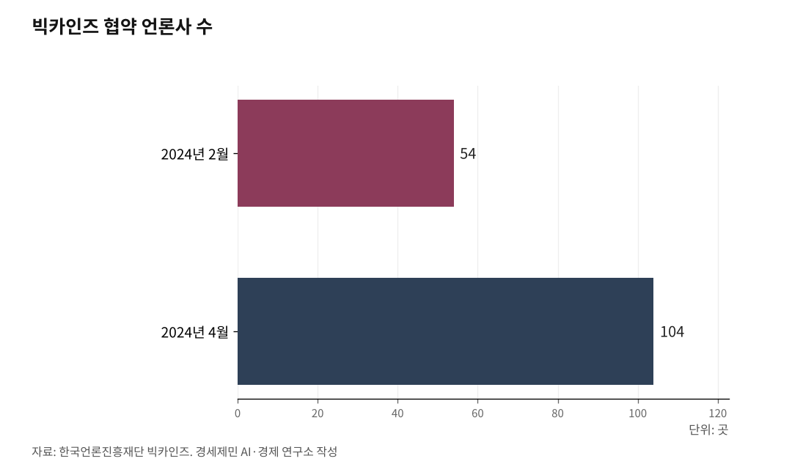

[AGI시대 지역언론②] 빅카인즈 API 연동, 별도 비용 없이 AI 검색 개통
중부일보, 지역언론 최초로 2025년 9월 AI 검색 서비스 개통
검색 증강 생성으로 자사 기사만 근거로 답변
민병수 디지털뉴스부 부국장 "비용 대비 효과와 지속 가능성 고려"
독자가 "인천 미추홀구 재개발 진행 상황은?"처럼 문장으로 질문하면, AI가 중부일보 기사에서 관련 내용을 찾아 요약해 답변한다. 단순 낱말 검색이 아니라 질문 의도를 파악해 기사를 골라주는 방식이다.
1. 빅카인즈 API 지침서 받아 누리집 업체와 구축
민병수 중부일보 디지털뉴스부 부국장은 한국기자협회 2025년 9월 9일 보도에서 구축 경위를 밝혔다.
"당초 언론재단 디지털 미디어 서비스 사업 지원을 받아 AI 검색 서비스를 구축하려 했지만 비용 대비 효과, 또 운영의 지속가능성을 고려해야 했다."
처음에는 언론재단 지원사업에 지원해 AI 검색을 만들려 했다. 그런데 마침 빅카인즈가 AI 기능을 전면 강화했다.
민 부국장은 "빅카인즈 서비스를 개선하면서 AI 기능을 전면 강화했길래 저희와 매칭해보면 어떨까 생각했다"고 말했다. 중부일보는 1999년부터 뉴스를 빅카인즈에 전송해왔다. 26년 동안 쌓인 경기·인천 뉴스 기사 저장소가 AI 검색 토대가 됐다.
민 부국장은 "API 지침서를 받아 누리집 개발업체와 함께 서비스를 구축했다"고 설명했다.

2. 자사 기사만 근거로 답변, 환각 차단
이 서비스는 검색 증강 생성(RAG) 기술을 쓴다. AI가 답변을 만들기 전에 먼저 중부일보 기사 저장소에서 관련 기사를 검색한다. 검색한 기사 내용을 바탕으로 답변을 생성한다.
AI가 자기 머릿속 지식으로 답하는 게 아니라 실제 기사를 근거로 답한다. 근거 없는 거짓 정보를 만들어내는 환각(hallucination)을 막는 핵심 기술이다.
개통 당시에는 질문 한 번에 답변 한 번을 주고받는 싱글턴(single-turn) 방식이었다. 2026년 4월 현재 체계 개선을 위해 서비스를 잠시 중단한 상태다.
3. 빅카인즈 AI, 104개 언론사 1억1000만건 뉴스 자료
빅카인즈는 한국언론진흥재단이 2016년부터 운영하는 국내 최대 뉴스 빅데이터 분석 서비스다. 2024년 2월 1일 대화형 AI 실험 버전을 개시했다. 같은 해 4월 협약 언론사를 54개에서 104개로 늘렸다.
2025년 3월 24일 AI 기반으로 전면 개편했다. 날마다 104개 언론사에서 수집한 1만여건 뉴스를 분야별로 분류하고 요약한다. 1990년부터 현재까지 1억1000만건 이상(2026년 4월 기준) 뉴스 자료를 AI로 분석할 수 있다.
API는 공공기관과 연구단체 48곳(2023년 말 기준)이 업무에 활용한다. 미디어 스타트업 공모와 뉴스 서비스 개발 지원 사업에도 무상으로 제공한다.
4. 지역언론 자원 한계, 유지보수가 더 어렵다
민 부국장은 지역언론 현실을 짚었다. "중앙 메이저 언론사야 자체 개발 인력이 있겠지만 지역 언론은 그런 자원이 거의 없다."
도입보다 유지가 더 어렵다는 점도 강조했다. "서비스를 도입한다 해도 지속적인 업데이트 등 유지보수 면에서 명확한 한계를 갖고 있다."
빅카인즈 API를 택한 이유가 여기에 있다. 빅카인즈 쪽에서 AI 엔진을 관리하고 갱신한다. 개별 언론사가 AI 모델을 직접 운영하지 않아도 된다.
5. 빅카인즈 협약 언론사면 지금 당장 가능
중부일보가 증명한 것은 명확하다. 빅카인즈 협약 언론사라면 API 지침서를 받아 누리집 개발업체와 연동하면 된다. 별도 서버나 GPU를 구매할 필요 없다.
공공기관과 연구단체 48곳(2023년 말 기준)이 이미 빅카인즈 API를 업무에 활용한다.
중부일보는 AI 검색 이전에도 단계적으로 AI를 도입해왔다. 2024년 구글 API를 활용한 뉴스 요약 서비스를 만들었다. 회원 지역정보를 바탕으로 맞춤형 뉴스를 보여주는 사이트도 지역신문 가운데 처음 구축했다.
한 번에 큰 투자를 하지 않았다. 쓸 수 있는 공공 기반시설과 무료 API를 활용해 한 단계씩 쌓아올렸다.
참고문헌
· 한국기자협회, 강아영 기자, "중부일보, 지역언론 첫 AI 검색 서비스… 빅카인즈 API 활용", 2025.9.9., https://www.journalist.or.kr/news/article.html?no=59280
· 중부일보, "[알림] 중부일보, 지역언론사 최초 AI 검색 서비스 구축", 2025.8., https://www.joongboo.com/news/articleView.html?idxno=363701993
· 뉴시스, "한국언론진흥재단, 대화형 '빅카인즈 AI' 공개", 2024.2.1., https://www.newsis.com/view/NISX20240201_0002612854
· 정책브리핑, "매일 1만여건 뉴스, '빅카인즈 AI'에 맡기면 요약·분석 무료", 2025.4.7., https://www.korea.kr/news/policyNewsView.do?newsId=148941416
· 빅카인즈 누리집, 전체 뉴스 수집 1억1558만건 표시, 2026.4.7. 확인, https://www.bigkinds.or.kr
· 중부일보 누리집, "시스템 업그레이드 작업으로 AI 검색 서비스 잠시 중단" 공지, 2026.4.16. 확인, https://www.joongboo.com
※ 이 기사는 AI 프로그램 클로드를 활용해 작성했습니다.
사진 출처
· [대표사진] Roman Kraft romankraft, "Person reading a newspaper (Unsplash).jpg", 위키미디어 공용, CC0, https://commons.wikimedia.org/wiki/File:Person_reading_a_newspaper_(Unsplash).jpg
※ 이 기사는 인공지능을 활용해 작성했습니다.
관련기사
- [AGI시대 지역언론③] 350만원에서 시작하는 지역언론 AI 서버
- [AGI시대 지역언론④] AI 기사 시대, 저널리즘 원칙 지키는 세 기둥
- [AGI시대 지역언론①] 자체 AI서비스 가능 조건은 서버
- [AGI시대 지역언론⑤] 오픈소스로 열린 지역언론 AI, 재원 구조가 발목
저작권자 © AI경세제민 무단전재 및 재배포, AI학습 및 활용 금지